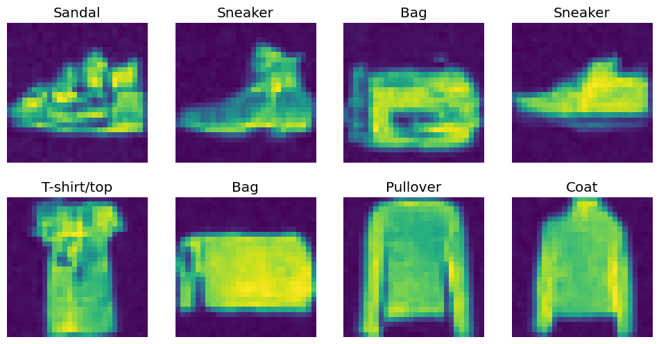
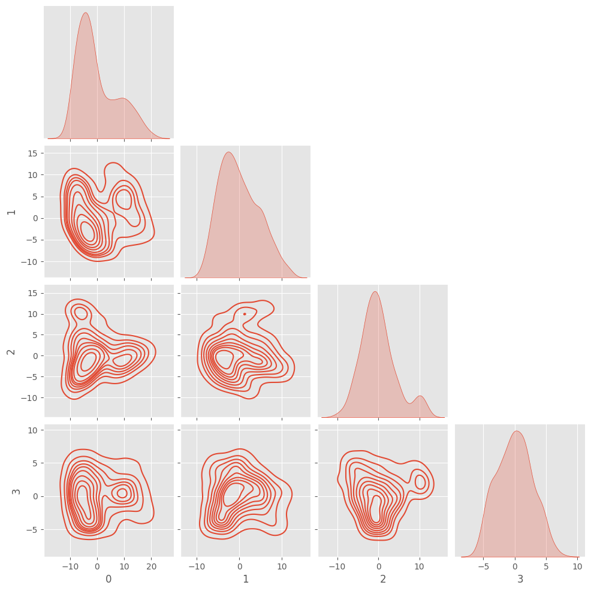
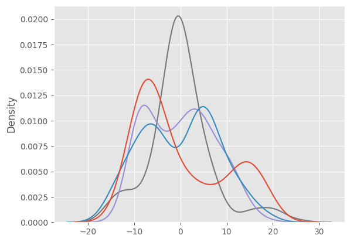
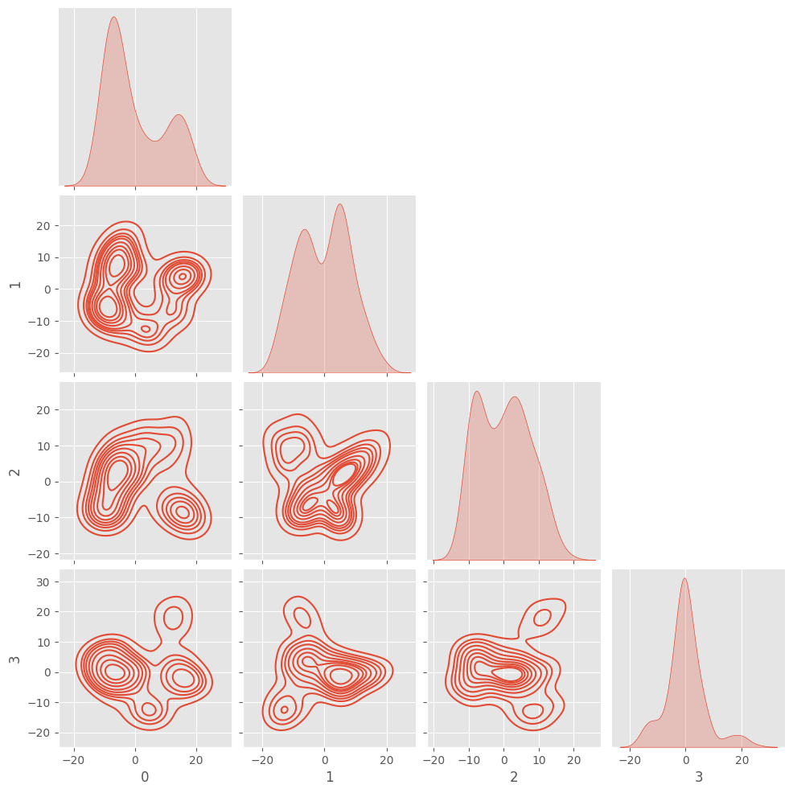
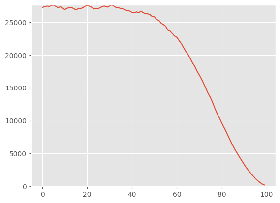
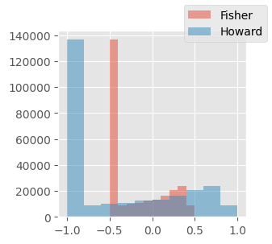
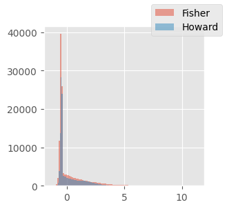

plt.style.use("ggplot")Fréchet inception distance
In this module, we develop a metric for measuring similarity between images that we can use to semi-objectively measure the quality of our generated images
Adapted from
Notes debugging things here
We want to compute how closely our generated images match the training distribution.
model_fp = Path("../models/fashion_unet.pt")
unet = torch.load(model_fp)
ddpm = DDPM()ddpm.sample?Signature: ddpm.sample(model, sz=(16, 1, 32, 32), device='cuda', return_all=False) Docstring: <no docstring> File: ~/Desktop/SlowAI/nbs/slowai/ddpm.py Type: method
_28x28 = T.Resize((28, 28), antialias=True)*earlier, out = ddpm.sample(unet, sz=(BS, 1, 32, 32), return_all=True)
out = _28x28(out)100%|██████████████████████████████████████████████████████████████████████████████████████████████████████████████████████████████████████| 999/999 [00:31<00:00, 32.22time step/s]out.shapetorch.Size([256, 1, 28, 28])out.min(), out.max()(tensor(-0.5499, device='cuda:0'), tensor(0.5491, device='cuda:0'))clf_resnet: ResNetWithGlobalPoolingInitialConv = torch.load(
"../models/fashion_mnist_classifier.pt"
)fashion_categories = {
0: "T-shirt/top",
1: "Trouser",
2: "Pullover",
3: "Dress",
4: "Coat",
5: "Sandal",
6: "Shirt",
7: "Sneaker",
8: "Bag",
9: "Ankle boot",
}preds = clf_resnet(out).argmax(axis=1)
preds = [fashion_categories[pred.cpu().item()] for pred in preds]show_images(out[:8, ...], titles=preds[:8])
To do so, we’ll use a metric called “Fréchet inception distance” that considers the statistics of the activations. This shall be the global average pool layer of a convolutional classifier. This does not give us the similarity between individual samples; rather, it considers the summary statistics of a batch of samples.
Jeremy really strains to use the Learner to capture the activations, but its much easier to just implement a hook.
get_fid_logits
get_fid_logits (model, xb, layer='pool')
Hook
Hook (h)
fake_feats = get_fid_logits(clf_resnet, out)
fake_feats.shapetorch.Size([256, 512])plt.hist(fake_feats.reshape(-1).cpu(), bins=100);
We can visualize the feature density in a few dimensions.
X = PCA(n_components=4).fit_transform(fake_feats.cpu())
sns.kdeplot(X, legend=False);
However, what we really want to capture is the co-variance of one feature with another to be able to “summarize” a batch.
sns.pairplot(pd.DataFrame(X), kind="kde", corner=True)
This figure starts to show how the model makes it simple to draw hyperplanes to make classification decisions. We can also use this where the “real” images have a certain covariance and the “fake” images have a different covariance.
dls = get_dls(BS)xb, _ = dls.peek()
xb = xb.to(def_device)
real_feats = get_fid_logits(clf_resnet, xb)
real_feats.shapetorch.Size([256, 512])summarize
summarize (X)
(m0, c0), (m1, c1) = summarize(fake_feats), summarize(real_feats)
m0.shape, m1.shape, c0.shape, c1.shape(torch.Size([512]),
torch.Size([512]),
torch.Size([512, 512]),
torch.Size([512, 512]))fid
fid (real, fake, bs=256)
fid(summarize(real_feats), summarize(fake_feats))346.86865234375Let’s double check using Jeremy Howard’s implmementation
def _calc_stats(feats):
feats = feats.squeeze()
return feats.mean(0), feats.T.cov()
def _calc_fid(m1, c1, m2, c2, bs=BS):
m1, c1, m2, c2 = map(to_cpu, (m1, c1, m2, c2))
csr = tensor(linalg.sqrtm(c1 @ c2, bs).real)
return (((m1 - m2) ** 2).sum() + c1.trace() + c2.trace() - 2 * csr.trace()).item()
def fid_howard(feats1, feats2):
s1, s2 = _calc_stats(feats1), _calc_stats(feats2)
return _calc_fid(*s1, *s2)fid_howard(real_feats, fake_feats)346.86865234375Good. Note that we take the product of two matrices, so we take the matrix square root to keep the variance within a reasonable boundary. This is the Newton-Schultz method where you compute: \[ \begin{align*} a &= \sqrt{x} \\ a^2 &= x \\ a^2 - x &= 0 \end{align*} \] By taking the derivative, subtracting a certain amount from the original matrix and determining if the difference between the new matrix squared and the original matrix squared is less than a tolerance.
linalg.sqrtm?Signature: linalg.sqrtm(A, disp=True, blocksize=64) Docstring: Matrix square root. Parameters ---------- A : (N, N) array_like Matrix whose square root to evaluate disp : bool, optional Print warning if error in the result is estimated large instead of returning estimated error. (Default: True) blocksize : integer, optional If the blocksize is not degenerate with respect to the size of the input array, then use a blocked algorithm. (Default: 64) Returns ------- sqrtm : (N, N) ndarray Value of the sqrt function at `A`. The dtype is float or complex. The precision (data size) is determined based on the precision of input `A`. When the dtype is float, the precision is the same as `A`. When the dtype is complex, the precision is double that of `A`. The precision might be clipped by each dtype precision range. errest : float (if disp == False) Frobenius norm of the estimated error, ||err||_F / ||A||_F References ---------- .. [1] Edvin Deadman, Nicholas J. Higham, Rui Ralha (2013) "Blocked Schur Algorithms for Computing the Matrix Square Root, Lecture Notes in Computer Science, 7782. pp. 171-182. Examples -------- >>> import numpy as np >>> from scipy.linalg import sqrtm >>> a = np.array([[1.0, 3.0], [1.0, 4.0]]) >>> r = sqrtm(a) >>> r array([[ 0.75592895, 1.13389342], [ 0.37796447, 1.88982237]]) >>> r.dot(r) array([[ 1., 3.], [ 1., 4.]]) File: ~/micromamba/envs/slowai/lib/python3.11/site-packages/scipy/linalg/_matfuncs_sqrtm.py Type: function
This is called the “Inception” distance because of the use of the Inception model. This allows us to compare metrics with other papers, but using a special-use classifier can be beneficial.
FID can be biased:
- FID depends on the batch size, where smaller batches have systematically larger distances
- The Inception model uses an image size of
299x299, which can cause artifacts if resizing images
To compare with other results from literature, make sure to keep the batch size consistent and make sure your images make a similar size.
The KID (Kernel Inception distance) is designed to mitigate these biases.
What is the KID
Jeremy glosses over the mathematics here, so the following is just copied from the notebook. KID is not common used due to the high variance: it is quite dependant on the random seed. This underscores that there is no unbiased metric of image distribution similarity. Human evaluation is the gold standard.
kid
kid (x, y, maxs=50)
kid(real_feats, fake_feats)1.2456791400909424Let’s make this a class.
ImageEval
ImageEval (inception, x_example, layer='pool', validate=None)
Initialize self. See help(type(self)) for accurate signature.
get_dls(32).peek()[0].min()tensor(-0.5000)img_eval = ImageEval(clf_resnet, xb)
img_eval.kid(out), img_eval.fid(out)(1.2456791400909424, 346.9293212890625)For comparison, we need to look at another real batch of data to see the ideal FID.
dl = iter(dls["test"])
_ = next(dl)
xb2, _ = next(dl)
img_eval.fid(xb2.cuda())95.071044921875Now, we can show that denoising improves the FID over the sampling trajectory.
fids = []
for i, x in enumerate(tqdm([*earlier, out][::10])):
fids.append((i, img_eval.fid(x)))100%|█████████████████████████████████████████████████████████████████████████████████████████████████████████████████████████████████████████████| 100/100 [00:13<00:00, 7.66it/s]fig, ax = plt.subplots(1, 1)
x, y = zip(*fids)
ax.plot(x, y)
ax.set_ylim(0, max(y) + 10)
fids[-1](99, 221.7041015625)
What should the minimum and maximum values be for images?
Jeremy mentions here that he noticed a “bug” where our dataset is normalized between 0 and 1, whereas everyone else normalizes between -1 and 1. However, when he implemented this “fix”, performance was much worse. It was only when he normalized between -0.5 and 0.5 that the model performance improved compared to 0 and 1 normalization.
Let’s try Jeremy’s experiments here.
Note that the original validation accuracy was 91.7%.
del unet
clean_mem()def train_clf(model, dls, lr=1e-2, n_epochs=2):
T_max = len(dls["train"]) * n_epochs
scheduler = BatchSchedulerCB(lr_scheduler.OneCycleLR, max_lr=lr, total_steps=T_max)
acc = MetricsCB(MulticlassAccuracy(num_classes=10))
cbs = [
acc,
DeviceCB(),
ProgressCB(plot=False),
scheduler,
]
learner = TrainLearner(
model,
dls,
F.cross_entropy,
lr=lr,
cbs=cbs,
opt_func=partial(torch.optim.AdamW, eps=1e-5),
)
learner.fit(n_epochs)
return acc.metrics["MulticlassAccuracy"].compute()pipe = [T.PILToTensor(), T.ConvertImageDtype(torch.float), T.Pad((2, 2))]
to_tensor = T.Compose(pipe)def get_norm_dls(a, b):
def norm(x):
return (to_tensor(x) - a) / b
return (
fashion_mnist(512)
.with_transforms({"image": batchify(norm)}, lazy=True)
.listify()
)xb, _ = get_norm_dls(0, 1).peek()
xb.shapetorch.Size([512, 1, 32, 32])def classification_accuracy_for_normalization(a, b, n_epochs=2):
dls = get_norm_dls(a, b)
batch, _ = dls.peek()
nfs = [
16,
32,
64,
128,
256,
]
model = ResNetWithGlobalPooling.kaiming(nfs)
dls = get_norm_dls(a, b)
xb, _ = dls.peek()
range_ = (batch.min().item(), batch.max().item())
return range_, train_clf(model, dls=dls, n_epochs=n_epochs)res = []
for a, b in tqdm([(0, 1), (0.5, 0.5), (0.5, 1)]):
with io.capture_output():
(min_, max_), acc = classification_accuracy_for_normalization(a, b)
res.append((min_, max_, acc))
res100%|█████████████████████████████████████████████████████████████████████████████████████████████████████████████████████████████████████████████████| 3/3 [00:32<00:00, 10.77s/it][(0.0, 1.0, tensor(0.9148)),
(-1.0, 1.0, tensor(0.9136)),
(-0.5, 0.5, tensor(0.9142))]These are all within 0.1% of one another and, moreover, the range that he said was dramatically better was slight worse than the one he said was the worst (-1 to 1). I’m not sure if Jeremy is right here.
Comparison to Howard’s classifier
My FID’s are much higher than Jeremy’s, even when comparing one batch of real data to another. Why is this?
Perhaps this is because Howard’s normalization was between -1 and 1, whereas I normalized between -0.5 and 0.5
dls = get_dls(BS)
xb_real_fisher_trn, _ = dls.peek("train")xb_real_howard_trn = xb_real_fisher_trn * 2
fig, ax = plt.subplots(figsize=(3, 3))
ax.hist(xb_real_fisher_trn.reshape(-1), label="Fisher", alpha=0.5)
ax.hist(xb_real_howard_trn.reshape(-1), label="Howard", alpha=0.5)
fig.legend()
Let’s compare logits
clf_fisher = torch.load("../models/fashion_mnist_classifier.pt")
clf_howard = torch.load("../course22p2/nbs/models/data_aug2.pkl")res = {}
for name, layer, clf, xb in [
("f", "pool", clf_fisher, xb_real_fisher_trn),
("h", GT[6], clf_howard, xb_real_howard_trn),
]:
assert xb.shape[0] == BS
print(xb.min(), xb.max())
res[name] = get_fid_logits(clf.to(xb.device), xb, layer)
f, h = res["f"], res["h"]tensor(-0.5000) tensor(0.5000)
tensor(-1.) tensor(1.)f.mean(), f.T.cov().sum(), h.mean(), h.T.cov().sum()(tensor(0.2282), tensor(2885.0217), tensor(0.1809), tensor(1464.5834))f.sum() / 256, h.sum() / 256(tensor(116.8285), tensor(92.6292))fig, ax = plt.subplots(figsize=(3, 3))
ax.hist(f.reshape(-1), label="Fisher", alpha=0.5, bins=100)
ax.hist(h.reshape(-1), label="Howard", alpha=0.5, bins=100)
fig.legend()
xb_real_fisher_tst, _ = dls.peek("test")
xb_real_howard_tst = xb_real_fisher_tst * 2img_eval_howard = ImageEval(clf_howard, xb_real_howard_trn, GT[6])
img_eval_fisher = ImageEval(clf_fisher, xb_real_fisher_trn, "pool")img_eval_howard.fid(xb_real_howard_tst)18.5101318359375img_eval_fisher.fid(xb_real_fisher_tst)97.3258056640625fids = []
for xb_fisher, _ in dls["test"]:
if xb_fisher.shape[0] != BS:
continue
ff = img_eval_fisher.fid(xb_fisher)
fh = img_eval_howard.fid(xb_fisher * 2)
fids.append((ff, fh))
ffs, fhs = zip(*fids)np.mean(ffs), np.std(ffs), np.mean(fhs), np.std(fhs)(93.02215732672276, 7.078136281810362, 17.31780536358173, 3.2822787956176085)It seems the difference comes from a property of the model itself, but which property?
μf, Σf = summarize(img_eval_fisher.featurize(xb_real_fisher_trn))
μh, Σh = summarize(img_eval_howard.featurize(xb_real_howard_trn))
μf.mean(), μh.mean(), Σf.sum(), Σh.sum()(tensor(0.2282, device='cuda:0'),
tensor(0.1809, device='cuda:0'),
tensor(2884.9214, device='cuda:0'),
tensor(1464.5806, device='cuda:0'))x = clf_fisher.layers[-1](torch.randn(1, 512, 1, 1).to(def_device))
x.shapetorch.Size([1, 512, 1, 1])(clf_fisher.pool(x) == x.squeeze()).all()tensor(True, device='cuda:0')clf_howard[5]ResBlock(
(convs): Sequential(
(0): Sequential(
(0): Conv2d(256, 512, kernel_size=(3, 3), stride=(1, 1), padding=(1, 1))
(1): BatchNorm2d(512, eps=1e-05, momentum=0.1, affine=True, track_running_stats=True)
(2): GeneralRelu()
)
(1): Sequential(
(0): Conv2d(512, 512, kernel_size=(3, 3), stride=(2, 2), padding=(1, 1))
(1): BatchNorm2d(512, eps=1e-05, momentum=0.1, affine=True, track_running_stats=True)
)
)
(idconv): Sequential(
(0): Conv2d(256, 512, kernel_size=(1, 1), stride=(1, 1))
)
(pool): AvgPool2d(kernel_size=2, stride=2, padding=0)
(act): GeneralRelu()
)